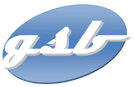
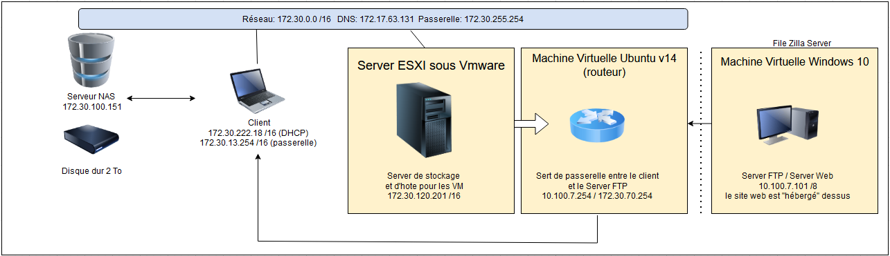

Bonjour c'est Paul, étudiant en BTS SIO passionné par l'informatique et la Cybersécurité.
Actuellement en apprentissage, je suis déterminé à approfondir mes connaissances et à développer mes compétences dans ce domaine passionnant.
Vous pouvez télécharger mon CV en utilisant le bouton ci-dessous pour découvrir mon parcours et mes expériences en cours.
N'hésitez pas à me contacter pour toute question ou opportunité liée à l'informatique et aux réseaux.
Mes stages
Pour ce stage de première année j'ai choisi de le faire dans le service informatique de la CCSS des Hautes-Alpes.
Pendant 5 semaines (du 27 mai 2024 au 5 juillet 2024) j'ai:
- Installé une PLC pour un logiciel
- Redigé des modes d'emploi utilisateur
- Crypté des Clée USB
- Installé des bornes Wifi
- Geré du patrimoine informatique
Pour ce deuxième stage j'ai choisi de le faire dans le service informatique de l'inspection Academique à Gap.
Pendant 5 semaines (du 7 janvier 2025 au 6 février 2025) j'ai:
- Crée des Fichiers Batch
- Redigé des notices pour les utilisateurs
- Configuré des routeur WiFi
- Travaillé sur un projet de réalité virtuel
- Geré du patrimoine informatique
Ateliers profesionnels
Durant mes deux années de BTS Informatique, j'ai réalisé des projets avancés lors des Ateliers de Professionnalisation qui ont lieu chaque semaines.
L'Atelier GSB Ce premiers ateliers consiste, à partir d'une entreprise fictive, de créer toutes les composantes de son SI (système informatique) au fil des semaines.
Voici la documentation détaillée de la mise en place de chaque étapes réalisées sur le cas GSB :
Création du site vitrine
Hébergement du site vitrine
Transfert du site
Protection du serveur Web
La base de données
Les travaux sont disponible ci-dessous au format PDF :

Le schéma réseau de GSB

Travaux pratiques
Lors de ces 2 années de BTS j'ai réalisé beaucoup de TP afin de renforcer mes competences et mes competences en informatique et en Cybersécurité
Je met ci-dessous un lien pour acceder a mon google drive si vous voulez voir mes travaux.
Veille technologique
Pour cette veille j'ai choisi comme sujet l'informatique quantique dans l'automobile